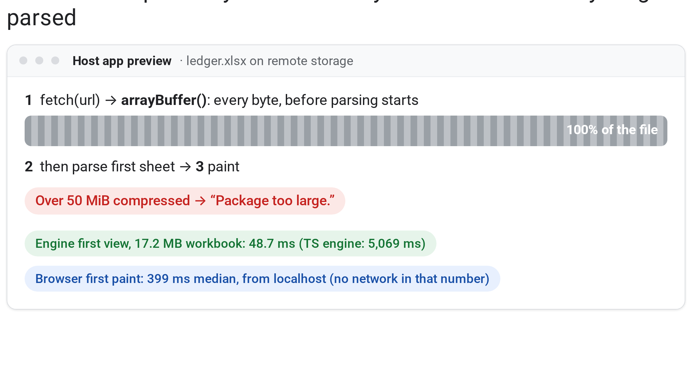
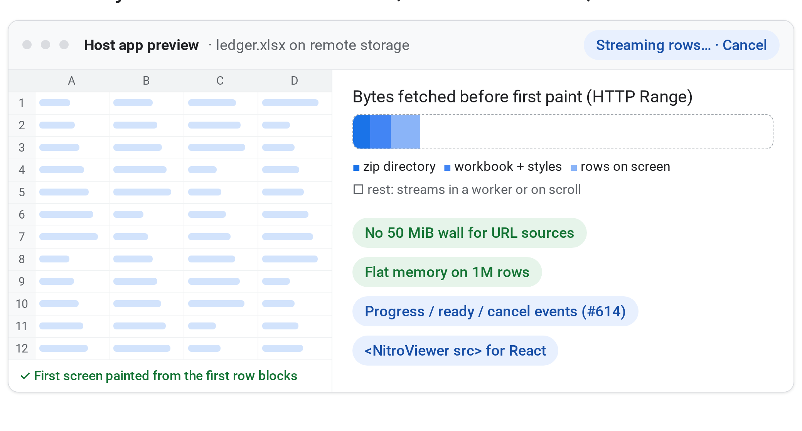
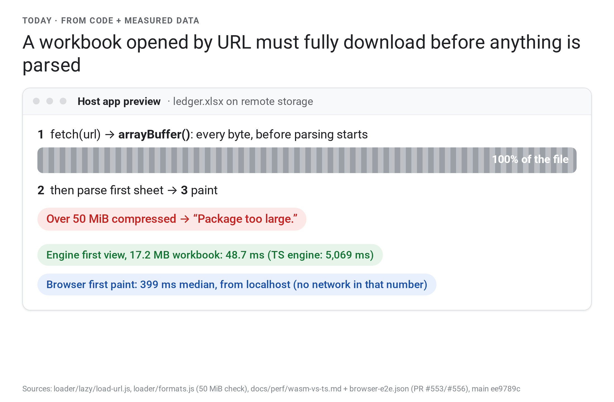
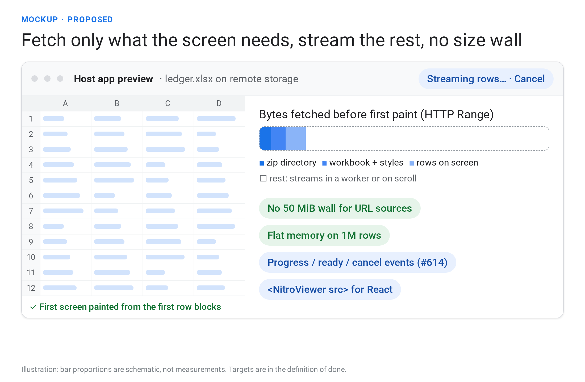

Open huge workbooks straight from storage: fetch only the bytes on screen, stream the rest, no size wall
New strategic bet (2026-11-24). Builds on #210 (closed) and proposal #614.
Approve: tap 👍 on the issue · Decline: tap 👎
Close-up of the change




Full screen


Today: loadUrl() downloads every byte (fetch, then arrayBuffer) before parsing starts, and files over 50 MiB compressed are refused with "Package too large." The engine itself is fast: 48.7 ms to the first view of a 17.2 MB workbook.


Mockup: the host preview paints the first screen after fetching only the zip directory, workbook, styles and the visible row blocks with HTTP Range requests; the rest streams in a worker or on scroll, with progress and Cancel.
Tap an image to open it full size.
Why
Big-workbook previews are where Nitro can beat everyone, and that is the case Jared's company has: very large Excel files on AWS EFS, previewed in a React app. Parsing is already fast (Nitro's engine shows the first view of a 17.2 MB workbook in 48.7 ms; the TypeScript engine it replaced takes 5,069 ms). The bottleneck now is the network and a size cap: every byte must arrive before parsing starts, and anything over 50 MiB is refused. This bet removes both. Nitro reads the zip directory with HTTP Range requests, fetches only the parts and rows on screen, streams the rest in a worker, and keeps memory flat on million-row sheets.
Who it wins
Embedding developers first: preview panes in React and host apps over S3, CloudFront, or EFS behind a web server, where today the whole file crosses the network before anything shows. Then every user who opens a big workbook. Today Nitro is fast once the bytes arrive. This bet makes it fast from the moment the file is requested, with no file-size ceiling for URL sources.
Phased plan
Each milestone ships on its own.
- M1 · Range-request open (about 1 week)loadUrl / src reads the zip central directory with HTTP Range and fetches only workbook, styles, shared strings and the first visible sheet. If the server ignores Range or CORS hides Content-Range, it falls back to today's full download. This milestone already helps any Range-capable store on its own.
- M2 · Streaming first view in a worker (1–2 weeks)The visible sheet is inflated and parsed in row blocks as bytes arrive. The first screen paints from the first blocks, and load progress / ready / cancel events fire (absorbs proposal #614).
- M3 · Million-row grid with flat memory (1–2 weeks)A row-block cache with eviction keeps memory bounded on a 1,048,576-row sheet, and jumping to any row fetches only that block. The 50 MiB cap is lifted for streamed URL sources only. In-memory buffers keep the cap, and the zip-bomb and ratio guards stay unchanged.
- M4 · React + storage recipe (3–5 days)<NitroViewer src preview> in React, a docs recipe for S3 presigned URLs and EFS behind nginx/CloudFront, and a throttled-network row in the browser perf table.
Evidence
- First view of the 17.2 MB XL workbook: 48.7 ms in Nitro's engine vs 5,069 ms in the TS engine. Peak memory 44.6 MiB vs 1,682.7 MiB.Source: docs/perf/wasm-vs-ts.md (PRs #553 and #556, measured 2026-11-17)
- Browser first paint of that workbook: 399 ms median, 658 ms p95, served from localhost. Network time on a real store is not in these numbers yet.Source: docs/perf/browser-e2e.json (PR #556)
- URL loads download the whole file before parsing: fetch(url), then arrayBuffer(), then loadBuffer().Source: packages/nitro-xml/loader/lazy/load-url.js, main ee9789c (v0.2.0)
- Inputs over 50 MiB compressed throw input_too_large, which users see as "Package too large."Source: packages/nitro-xml/loader/formats.js checkInputSize, main ee9789c
- #210 (closed) made parsing lazy per sheet and viewport-only. Byte-range access was in its spec, but URL loading still reads everything.Source: issue #210
- Demand: Jared's company previews very large Excel files from AWS EFS in a React app. Proposal #614 (load progress / ready / cancel) is open.Source: Jared, 2026-11-19; issue #614
- For comparison, Google Sheets caps a spreadsheet at 10 million cells and converts xlsx into its own format to edit it. Excel's grid is 1,048,576 rows × 16,384 columns.Source: Google Sheets and Microsoft Excel published limits
Definition of done
- Opening a 200 MB or larger xlsx by URL from a Range-capable test server paints the first screen without downloading the whole file. A CI test checks that bytes fetched before first paint are 10% of the file or less, and that first paint is 1.5 s or less at a 'Fast 4G' throttle.
- Servers without Range support fall back to today's full download with identical output. Zip-bomb, ratio and part-size guards still trip.
- Scrolling or jumping to row 1,000,000 of a 1M-row sheet fetches only the blocks it needs, and a memory CI keeps the heap within a fixed budget.
- React <NitroViewer src> preview mode plus docs for S3 presigned URLs and EFS behind nginx. Load progress / ready / cancel events work (#614).
- Eager loader under 17,408 B brotli. docs/perf gains a throttled-network row. All required checks green.
Approve: tap 👍 on the issue · Decline: tap 👎